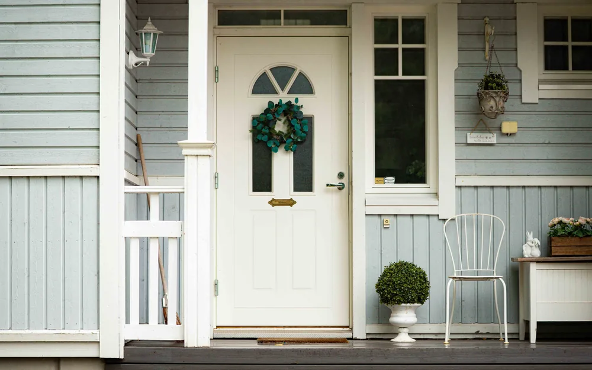

Hyrylästä Jokelaan ja Kellokoskelle — kolme taajamaa, yksi käynti kerrallaan.
Kiinteä hinta heti · kotitalousvähennys −40 % · ei tarjouspyyntöjä

Tuusula on laaja ja hajanainen: Hyrylä, Jokela ja Kellokoski ovat käytännössä kolme erillistä taajamaa, ja niiden välissä on paljon haja-asutusta. Rakennuskanta vaihtelee Tuusulanjärven vanhoista huviloista 1980–2000-luvun omakotitaloihin, joten työ näyttää hyvin erilaiselta kunnan eri osissa.
Koska välimatkat ovat pitkiä, yksittäisen ikkunan takia ei kannata tilata käyntiä — minimiveloitus söisi hyödyn. Tiivistä koko talo samalla kertaa, niin matkan osuus jakautuu kaikille kohteille ja yksikköhinta putoaa.
Muun muassa näissä Tuusulan osissa — koko kunta kuuluu palvelualueeseen.
Samat hinnat koko toiminta-alueella. Kaikki hinnat sisältävät ALV 25,5 %, tiivisteet ja työn.
| Kohde | Hinta |
|---|---|
| IkkunaKarmi- ja puitetiivisteet, per ikkuna | 95 €85 € (5–9 kpl) · 75 € (10–19) · 65 € (20+) |
| Ulko-oviSivutiivisteet + kynnyskumi, käynnin säätö | 119 €99 € samalla käynnillä muun työn kanssa |
| ParvekeoviPuu-/alumiiniparvekeovi, koko kehä | 119 €99 € samalla käynnillä muun työn kanssa |
| Terassin liuku-/parioviIso lasiovi tai liukuovi, kiskon huolto | 149 € |
| Väli- / huoneoviSisäoven ääni- ja vetotiiviste | 89 €59 € samalla käynnillä muun työn kanssa |
| Pelkkä kynnyskumiAlaslistan / kynnyksen tiivisteen vaihto | 45 € |
| Pienin veloitus / käyntiSisältää matkat, kartoituksen ja lämpökamerakuvauksen | 149 € |
Mahdollinen matkalisä määräytyy postinumeron mukaan ja näkyy laskurissa ennen varauksen vahvistamista — sitä ei lisätä jälkikäteen laskuun.
Valitse Tuusulan kotisi ovet ja ikkunat — kiinteä hinta päivittyy heti.
Vanhojen tiivisteiden poisto, pintojen puhdistus, uudet EPDM- tai silikonitiivisteet sekä oven käynnin säätö niin että ovi painuu tasaisesti tiivisteitä vasten. Ulko-oviin kuuluu myös kynnyskumi. Lämpökamerakartoitus veloituksetta. Hinta tarkistetaan paikan päällä ennen työn aloitusta.
Rappukäytävät ja yhteistilat kerralla kuntoon sopimushinnalla. Mitä useampi ovi, sitä edullisempi kappalehinta.
Taloyhtiölle ei varata aikaa verkosta, koska hinta muodostuu kohteen laajuudesta. Kartoitus on maksuton eikä sido mihinkään.
Mahdollinen matkalisä määräytyy postinumeron mukaan ja näkyy laskurissa ennen varauksen vahvistamista — sitä ei koskaan lisätä jälkikäteen laskuun. Syötä postinumerosi, niin näet oman hintasi.
Ei ole. Vanha puuikkuna on usein juuri se kohde jossa tiivistys tuottaa suurimman eron, koska alkuperäistä tiivistettä ei välttämättä ole koskaan uusittu. Työ on hitaampaa mutta hinta sama.
Valitse ovet ja ikkunat laskurista, niin näet kiinteän hinnan, arvioidun keston ja kotitalousvähennyksen. Ajan varaat suoraan kalenterista.
Lähialueet: Nurmijärvi · Hyvinkää · kaikki toiminta-alueet